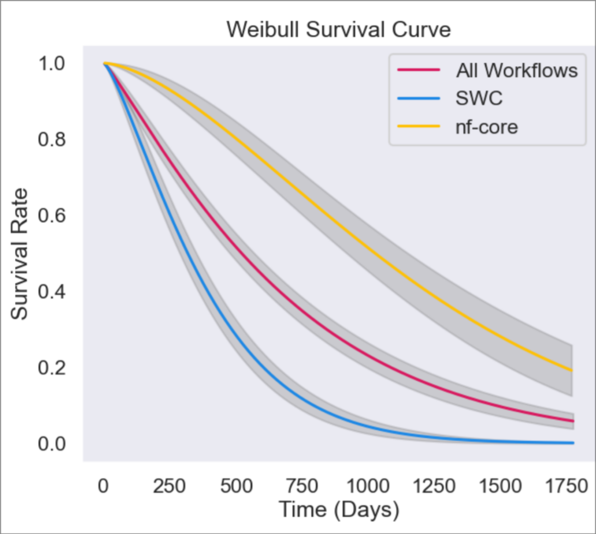
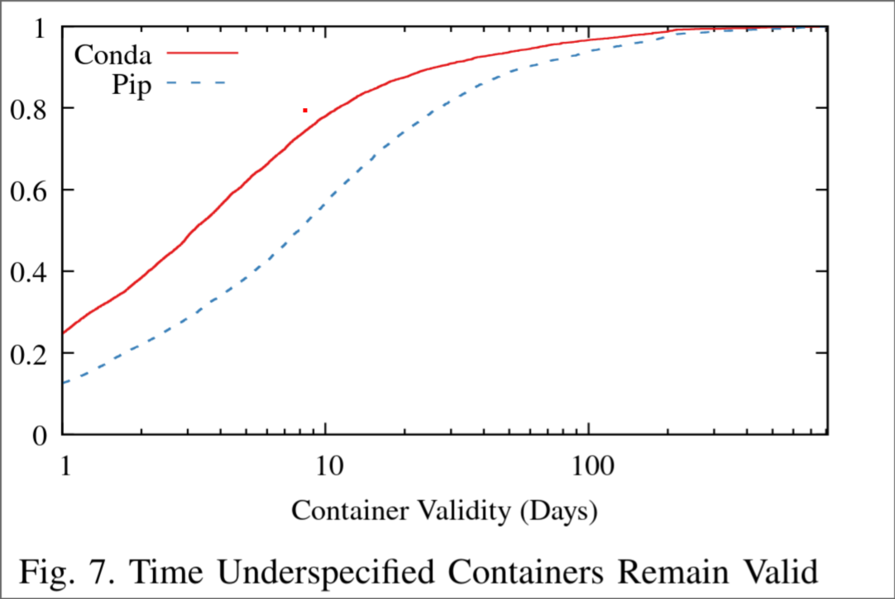
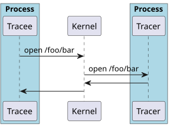
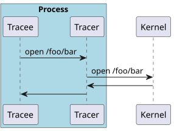

Improving reproducibility in computational science
The problem
- Science is inherently collaborative
- Reproduce other's work for validation and extension

Replication crisis (Ioannidis 2005)
- Statistics
- Expensive; low reward
- Fraud
- Difficulty
Digital computers are robust to noise
Should computational experiments be easier to replicate (addressing "difficulty" reason)?
…
- No code (43%) (Collberg et al. 2015)
- Unsure of the right version
- Lack of documentation
- Unable to acquire software env.
- Build errors (27%)
- distribution is missing files (20%)
- incomplete documentation (18%)
- missing third party package (13%)
- runtime error (15%)
- Why Workflows Break (Zhang et al. 2012)
- Change of third party resources (50%)
- Insufficient metadata (29%)
- Example data unavailable (15%)
- Insufficient execution environment (12%)
- Updated study (Grayson et al. 2023)
- Missing input (32%)
- Conda environment unsolvable (11%)

- What about Docker (Shaffer et al. 2021)
- 56% lack lockfile
- Public notebook service storing user containers costs 1k$ / month

User error?
A technical solution
Record/replay software execution
What to record
- File reads (scripts, data, exes, libs, /dev/urandom)
- Network calls?
- || Schedule?
Record methods
- Kernel-level
- eBPF
- ptrace
- Lib. interpos. (see GLUG 2022-11-16)
| Benchmark | Native | fsatrace | CARE | strace | RR | ReproZip |
|---|---|---|---|---|---|---|
| None | Lib. interp. | Ptrace | Ptrace | Ptrace | Ptrace | |
| Tar Unarchive | 0 | 4 | 44 | 114 | 195 | 149 |
| Python import | 0 | 5 | 85 | 84 | 150 | 346 |
| Git checkout | 0 | 5 | 71 | 160 | 177 | 428 |
| Compile w/Spack | 0 | -1 | 119 | 111 | 562 | 359 |
| cp | 0 | 37 | 641 | 380 | 232 | 5791 |
| Others not shown | … | … | … | … | … | … |
| Geometric mean | 0 | 0 | 45 | 66 | 146 | 193 |


Prior tools are not feasible (kernel or eBPF) or too slow
But lib. interpos. is a promising route
PROBE: Provenance for Replay OBservation ENgine
probe record CMD...runsCMD...withLD_PRELOADand others- Library interposes relevant functions (
fopen) - On first call, initializes thread-local mmem-map log
- On each call, append record to log
- Pass through to child processes
- Demo here
Learnings
- Libc spec ≠ glibc headers
- Using C struct as serialization language
- Rust and C++ are too high-level (lang. runtime)
- Nix environment actually works
- Single node feels like distributed sys.
- Sync. events, (e.g.,
fork()) order events between threads/procs - Happens-before order := transitive closure of union of sync. order and thread order
- Race conditions are common:
sh -c "abc | def"
new: define "information may flow" := A is write, B is read, B does not happen-before A.
Extensions
- Incremental recomputation
- Staged data analyses
- Change a graph, re-execute
- Interoperable provenance (W3C PROV)
- Compliance tracking
- Embed provenance in data formats
- Workflow-ize pile of scripts
- Documentation problem